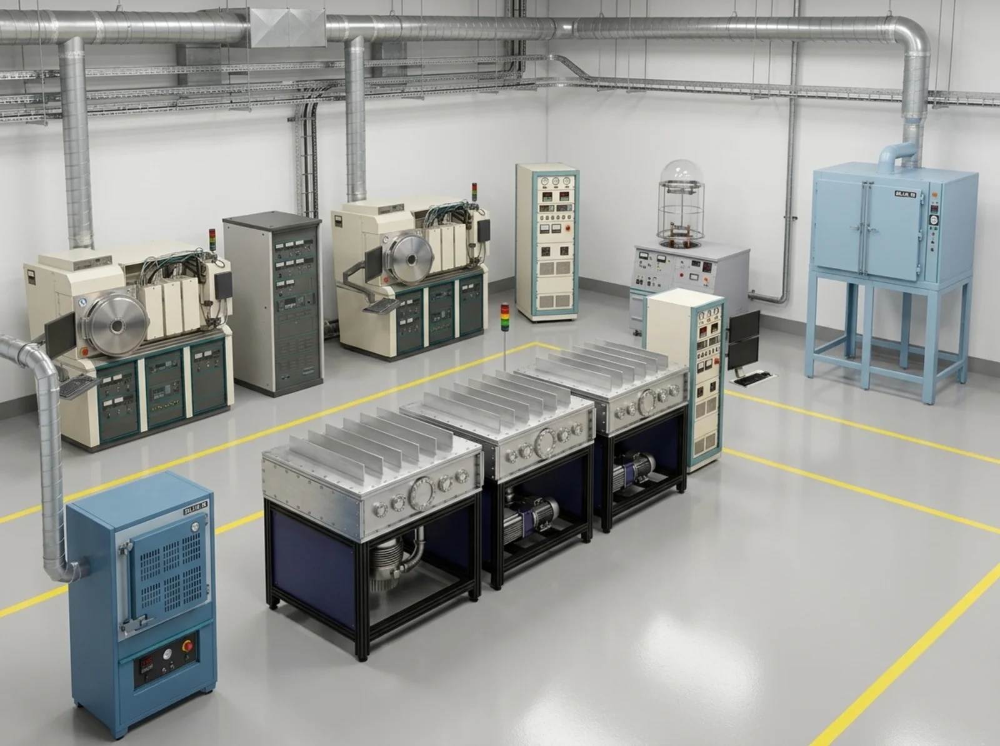

Building the backbone of American high-tech manufacturing.
STARC is a nonprofit, open-access research facility for semiconductors, thin films, and advanced materials — where innovators get the infrastructure, expertise, and training to turn ideas into American-made technology.
Opening 2026 · Forge Campus · Loveland, CO
Why We Exist
You bring the innovation. We provide the infrastructure.
World-class materials research infrastructure is expensive. The equipment costs millions. The expertise to operate it takes decades to build. For too many innovators — startups, researchers, small manufacturers — access to these capabilities is simply out of reach.
STARC changes that. We've brought together the equipment, the expertise, and the infrastructure — and we're opening the doors. Whether you're developing a new thin-film process, scaling toward production, or training for a career in semiconductors, STARC gives you affordable access to the tools that make it possible.
Open access. Advanced materials. Real impact.

Mission & Vision
Our Mission
To strengthen America's leadership in semiconductors and advanced materials by providing open-access research infrastructure, expert process development, and hands-on workforce training — empowering the scientists, engineers, startups, and innovators who will build the next generation of American technology.
Our Vision
A thriving American innovation ecosystem where world-class materials research infrastructure is within reach of every innovator — driving breakthroughs in semiconductors and emerging technologies, revitalizing domestic manufacturing, and creating skilled, high-paying careers for American workers.
What We're Building Toward
- Open-access thin-film and semiconductor processing capabilities for commercial, academic, and government users
- Expert process development, prototyping, and batch production — from proof-of-concept to feasibility at scale
- A skilled American workforce, trained and certified in thin films, vacuum technology, and semiconductor manufacturing
- Partnerships across industry, academia, and government that turn ideas into American-made innovation
- Expanded regional and national research capability through federal, state, and institutional collaboration
Explore STARC
Three ways to accelerate your work.
Capabilities
Sputter deposition, thermal evaporation, vacuum processing, plasma treatments, and full analytical services — open to all users.
Explore capabilities →Training & Certification
Hands-on workforce programs in thin films, semiconductors, vacuum systems, and industrial safety — built for high-paying careers.
Explore training →Leadership
Nationally recognized scientists, builders, and industry leaders guiding STARC's mission.
Meet the team →The doors open soon. The conversations start now.
Whether you're an innovator who needs infrastructure, a partner who shares the mission, or a future trainee ready for a new career — we want to hear from you.
Contact STARC